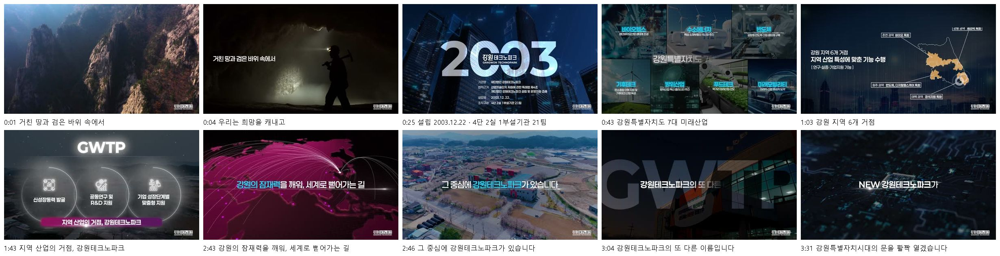
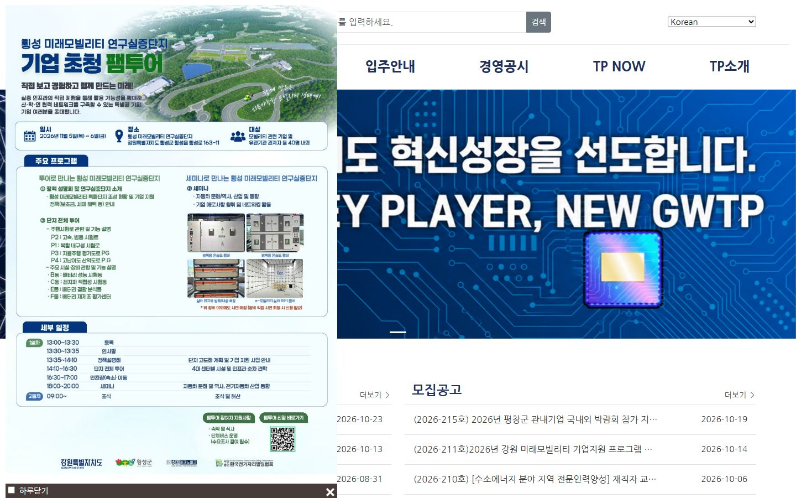
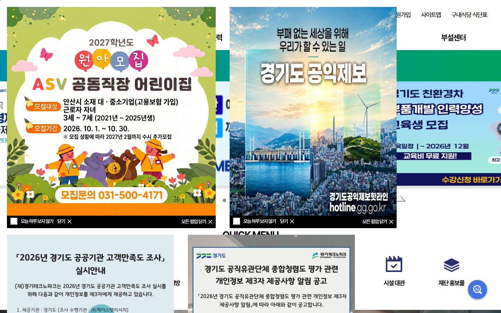
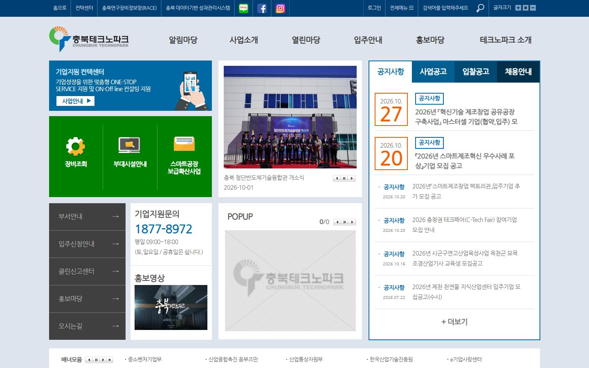
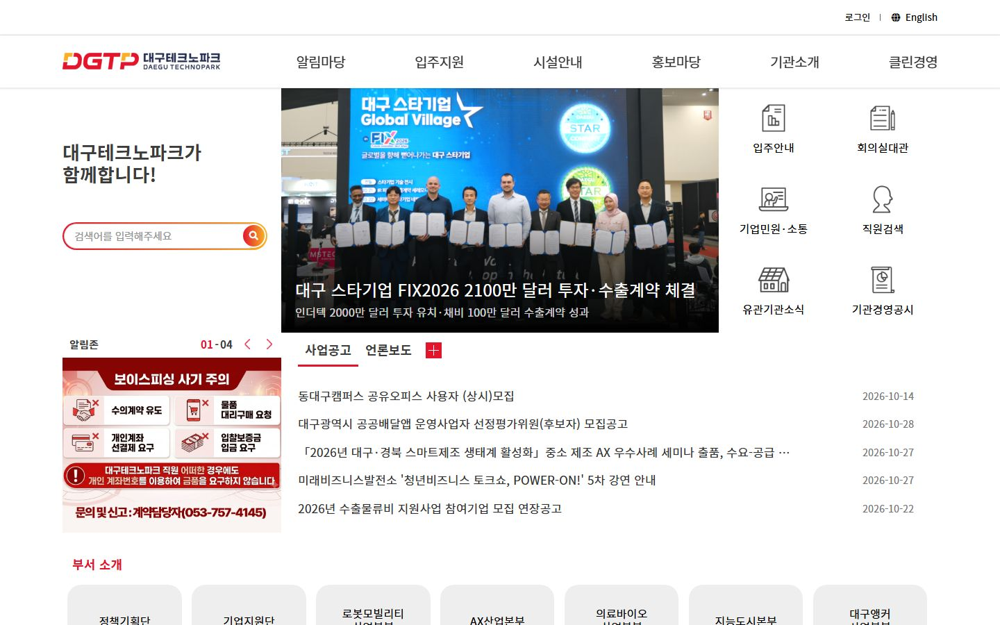
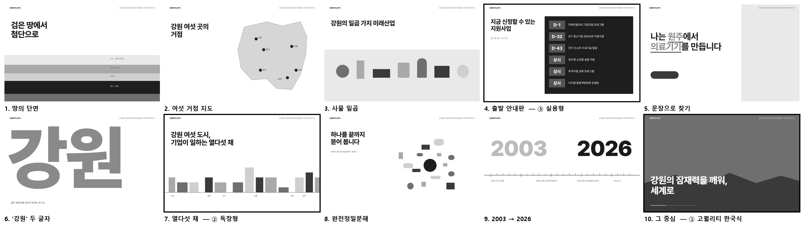

한눈에
테스트 3·4·5 첫 화면 나란히

1. 몰입 노트
그리기 전에 강원TP를 판 기록
본 것
- 홈페이지 전체 메뉴
- 대메뉴 6개, 하위 메뉴 30개를 다 열어 봄 — 공고안내 5 · 사업안내 3 · 입주안내 3 · 경영공시 7 · TP NOW 5 · TP소개 7. 인사말·비전·일반현황·지역사업안내·시설현황 원문을 읽음.
- 홍보영상 2편
- 2026년 영상(3분 36초)을 3초마다 끊어 73장, 자막 88컷으로 읽음. 2023년 영상은 단지 항공 장면 위주.
- 보도자료
- TP NOW > 언론보도 최근 10건(10/27 미래차 부품 재제조, 10/22 바이오·마이크로바이옴, 10/13 5극 3특 초광역 협력, 10/13 미래모빌리티 인프라, 10/07 스마트공장 DX 교육 등).
- 공고
- 공고 45건(공지 고정 15건)의 공고문까지 열어 봄. 10/29 홈 목록 공지·모집·계약·채용 각 5건.
- 시설 사진
- 시설현황 15곳(6개 시군) 사진과 층별 구성, 홍보영상 속 단지 항공 장면 12장.
- 비슷한 기관 3곳
- 경기테크노파크, 충북테크노파크, 대구테크노파크 첫 화면(1440). 해외 1곳(하이테크캠퍼스 에인트호번)은 접속 제한(429)으로 못 열어 뺌.
숫자로 본 강원TP
- 2003.12.22
- 설립일(홍보영상 0:25)
- 4단 2실 1부설기관 21팀
- 조직(홍보영상 0:25)
- 6개 시군 15곳
- 입주안내 > 시설현황(춘천 3·강릉 5·원주 3·삼척 2·태백 1·홍천 1)
- 7대 미래산업
- 바이오헬스, 수소에너지, 반도체, 기후테크, 방위산업, 푸드테크, 미래모빌리티(홍보영상 0:43)
- 45건
- 공고(공지 고정 15건) — 10/29 기준 접수 중 3건, 상시 7건
- 033-248-5600
- 대표전화(바닥글)
강원TP가 스스로 하는 말
- “거친 땅과 검은 바위 속에서 우리는 희망을 캐내고”2026 홍보영상 0:01
- “지역 산업의 거점, 강원테크노파크”2026 홍보영상 1:43
- “강원의 잠재력을 깨워, 세계로 뻗어가는 길”2026 홍보영상 2:43
- “그 중심에 강원테크노파크가 있습니다”2026 홍보영상 2:46
- “NEW 강원테크노파크가 강원특별자치시대의 문을 활짝 열겠습니다!”2026 홍보영상 3:31
- “혁신으로 여는 미래, 함께 성장하는 강원”TP소개 > 인사말(이사장) 제목
- “청정 자연이라는 고유한 자산 위에 첨단산업을 더해, 기업이 마음껏 혁신하고 청년이 강원에서 꿈을 펼치는 산업 생태계”TP소개 > 인사말(이사장)
- “기술개발부터 사업화, 인재 양성, 생태계 조성까지 기업 성장의 전 주기를 밀착 지원”TP소개 > 인사말(이사장)
- “강원특별자치도 혁신성장을 선도합니다. 행동하는 KEY PLAYER, NEW GWTP”지금 홈페이지 첫 화면

지금 홈페이지에서 걸리는 것
- 첫 화면 왼쪽 절반을 행사 포스터 팝업이 덮는다.
- 첫 문구 'KEY PLAYER, NEW GWTP'와 반도체 칩 그림은 다른 TP에 붙여도 맞는다 — 강원이 안 보인다.
- 공고 목록에 마감일 칸이 없다. 고정 공고 15건 중 11건은 본문이 그림이라 내용이 글자로 안 읽힌다.
- '모집중' 표시가 마감 지난 공고에도 남아 있다(2026-64호, 4/28 마감).
- 지역·분야로 거를 수 없다 — 원주 의료기기 회사가 자기 공고를 찾으려면 45건을 다 열어야 한다.
지금 첫 화면

비슷한 기관 3곳



세 곳 모두 배너 슬라이드 + 공고 탭 + 아이콘 격자 + 팝업이라 같은 틀이다. 강원TP가 달라 보일 자리는 둘뿐이다 — 강원 땅과 거점(다른 곳엔 없는 것), 그리고 지금 신청할 수 있는 공고(모두가 찾으러 오는 것).
갈래별 한 줄 믿음 (이 노트에서 뽑음)
① 고퀄리티 한국식
강원TP는 강원 땅 전체를 산업으로 깨우는 중심이다.
근거: '강원의 잠재력을 깨워, 세계로 뻗어가는 길'(영상 2:43) · '그 중심에 강원테크노파크가 있습니다'(영상 2:46) — 기관이 스스로 고른 마지막 장면의 말.
② 독창형
강원TP의 정체는 배너가 아니라 강원 곳곳에 기업이 들어가 일하는 건물들이다.
근거: 시설현황 6개 시군 15곳 · '강원 지역 6개 거점, 기업 성장지원을 위한 인프라 조성'(영상 1:03) — 다른 TP 세 곳 첫 화면엔 건물이 없다.
③ 실용형
이 홈페이지에 오는 기업의 첫 질문은 '지금 내가 신청할 수 있는 게 뭐냐'다.
근거: 공고 45건인데 목록에 마감일 칸이 없고 11건은 본문이 그림 · 충북TP는 공고 날짜를 크게 쓴다 · '기업 성장의 전 주기를 밀착 지원'(이사장).
2. 먼 방향 10개에서 3개로
서로 크게 다른 첫 화면 10개를 흑백으로 거칠게

| 방향 | 한 줄 | 그림 | 고른 이유 / 뺀 이유 |
|---|---|---|---|
| 1. 땅의 단면 | 검은 땅에서 첨단으로 | 지층 단면 띠(탄층 → 세라믹 → 수소) | 뺌 — 테스트 3 ①(검은 돌 → 세라믹)과 같은 이야기 |
| 2. 여섯 거점 지도 | 강원 여섯 곳의 거점 | 강원 윤곽 위 거점 6개 | 뺌 — 테스트 3 ③(남색 위 흰 선 6거점)과 같은 그림 |
| 3. 사물 일곱 | 강원의 일곱 가지 미래산업 | 7대 미래산업 사물 정물 | 뺌 — 테스트 4 ①(사업 사물 6장)과 같은 수단 |
| 4. 출발 안내판 | 지금 신청할 수 있는 지원사업 | 마감 순으로 선 공고 판이 곧 첫 화면 | ③ 실용형으로 고름 — 몰입에서 찾은 가장 큰 불편(마감일 없음·그림 본문·거르기 없음)을 첫 화면이 바로 푼다 |
| 5. 문장으로 찾기 | 나는 [원주]에서 [의료기기]를 만듭니다 | 빈칸 문장 검색 | 뺌 — #1457 1안·3방향 실험 3안이 이미 씀 |
| 6. '강원' 두 글자 | 강원 | 초대형 두 글자 속 실사 | 뺌 — 어느 강원 기관에도 맞는 포스터, 강원TP만의 것이 아님 |
| 7. 열다섯 채 | 강원 여섯 도시, 기업이 일하는 열다섯 채 | 시설 15곳을 오려 한 줄 거리로(에드 루샤 1966) | ② 독창형으로 고름 — 어느 TP도 안 하는 그림이고 실제 건물이라 지어낸 것이 없다 |
| 8. 완전정밀분해 | 하나를 끝까지 뜯어 봅니다 | 미래차 부품 분해도 | 뺌 — 10/27 보도자료 한 분야(미래차)만 말한다 |
| 9. 2003 → 2026 | 2003년부터 오늘 공고까지 | 연표 띠 | 뺌 — 첫 화면에서 할 일이 없다(정보 위계 약함) |
| 10. 그 중심 | 강원의 잠재력을 깨워, 세계로 | 화면 가득 강원 실제 장면 + 큰 두 줄 | ① 고퀄리티 한국식으로 고름 — 한국 대기업 에이전시 문법(화면 가득 실사·왼쪽 아래 큰 두 줄·장면 진행)에 가장 맞고, 영상 원문이 바로 한 줄이 된다 |


① 고퀄리티 한국식
작업 중
② 독창형
작업 중
③ 실용형
작업 중